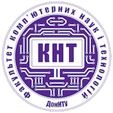

        <div class="main main-raised">
            <div class="profile-content">
                <div class="container">
                    <div class="row">
                        <div class="profile">
                            <div class="avatar">
                                <a href=".."></a>
                            </div>
                            <div class="name">
                                <h1 class="title">Кафедра комп'ютерных наук</h1>
                                <h6></h6>
                            </div>
                        </div>
                    </div>


                    <div class="row">
                        <div class="row text-center">
                            <div class="col-md-4 col-md-offset-4">
                                <h3>Завідуючий кафедрою</h3>
                                <p>д.т.н., доц.</p>
                                <p><strong>Євген Федоров</strong></p>
                                <p>yevhen.fedorov@donntu.edu.ua</p>
                            </div>
                        </div>
                        <hr>
                        <p>Сфери діяльності:</p>
                        <ul>
                            <li>проектування і розробка інформаційних і управляючих систем;</li>
                            <li>проектування і розробка систем штучного інтелекту;</li>
                            <li>проектування і розробка веб-орієнтованих систем;</li>
                            <li>моделювання і комп’ютерний дизайн;</li>
                            <li>екологічний та економічний моніторинг.</li>
                        </ul>
                        <p>Основні дисципліни:</p>
                        <ul>
                            <li>мови і технології програмування;</li>
                            <li>апаратні засоби комп’ютерних систем;</li>
                            <li>засоби моделювання і проектування систем різноманітної направленості і рівнів складності;</li>
                            <li>методи і засоби штучного інтелекту;</li>
                            <li>технології збору, обробки та зберігання даних;</li>
                            <li>проектування і розробка мультимедійних систем та комп’ютерний дизайн.</li>
                        </ul>
                        <hr>
                    </div>

                </div>
            </div>
        </div>